장소명, 지역(제물포·송도·강화·영종…), 테마(섬·역사·야경·미식), 자료명, 공지 제목으로 검색할 수 있습니다.
가이드북 · 지도 · 테마여행북
인천관광공사·인천시 발간 자료를 웹 열람용으로 제공합니다. 원본(고해상도)은 인천투어(itour.incheon.go.kr)에서 받을 수 있습니다.
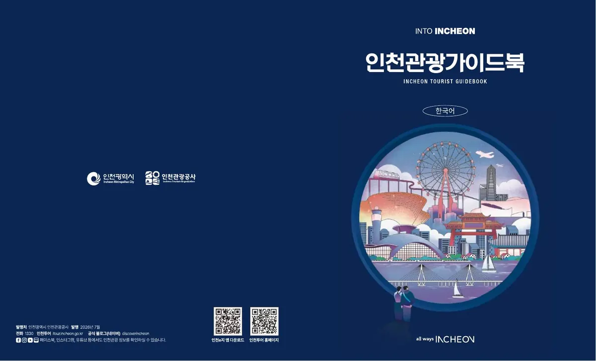
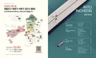
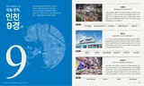
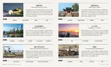
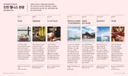
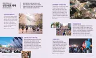
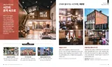
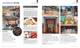
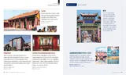
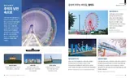
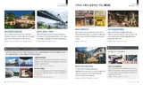
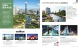
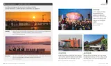
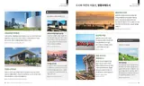
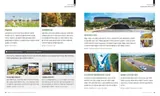
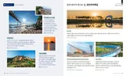
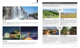
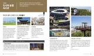
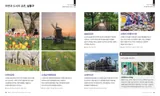
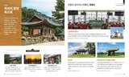
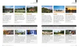
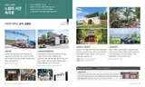
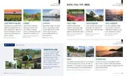
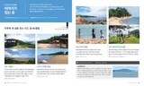
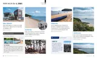
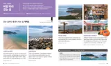
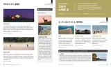
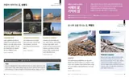
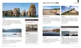
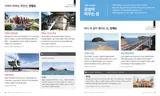
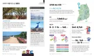
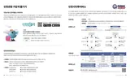
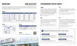
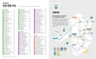
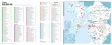
순환형 코스로 주요 거점을 하루에 — 노선도는 아래 이미지를 확대해 보세요.
관광안내·통역·여행불편 상담. 운영시간은 안내소별로 다르며 명절에 휴무인 곳이 있습니다.
| 안내소명 | 전화 | 운영시간 |
|---|---|---|
| 인천종합관광안내소 | +82-32-832-3031 | 09:00~18:00 (설·추석 휴무) |
| 인천국제공항 관광안내소 (동편) | +82-32-743-0013 | 07:00~22:00 (연중무휴) |
| 인천국제공항 관광안내소 (서편) | +82-32-743-0011 | 07:00~22:00 (연중무휴) |
| 인천국제공항 관광안내소 (제2터미널) | +82-32-743-0030 | 07:00~22:00 (연중무휴) |
| 월미도 관광안내소 | +82-32-765-4169 | 09:00~18:00 (설·추석 휴무) |
| 인천역 관광안내소 | +82-32-777-1330 | 09:00~18:00 (설·추석 휴무) |
| 인천버스터미널 관광안내소 | +82-32-435-7257 | 09:00~18:00 (설·추석 휴무) |
| 강화 마니산 관광안내소 | +82-32-934-5565 | 09:00~18:00 (설·추석 휴무) |
| 경인아라뱃길 정서진 관광안내소 | +82-32-561-1339 | 09:00~18:00 (설·추석 휴무) |
| 소래포구 관광안내소 | +82-32-431-2213 | 09:00~18:00 (설·추석 휴무) |
| 인천항 국제여객터미널 관광안내소 | — | 09:00~18:00 [확인 필요] |
인천 안팎의 이동 정보